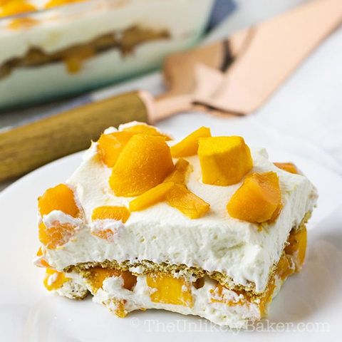

Ingredients
- 2-3 ripe mangoes, peeled and sliced
- 1 can (14 oz) condensed milk
- 1 can (12 oz) all-purpose cream
- 1 pack of graham crackers
- 1/2 cup crushed graham crackers (for topping)
Instructions
- Mixing the Cream: In a bowl, combine the condensed milk and all-purpose cream. Mix well until smooth and well combined.
- Layering: In a rectangular or square dish, arrange a layer of whole graham crackers at the bottom. Spread a layer of the cream mixture over the graham crackers. Place a layer of sliced mangoes on top of the cream mixture.
- Repeating Layers: Repeat the layers of graham crackers, cream mixture, and sliced mangoes until you reach the top of the dish or until you’ve used up all your ingredients. The topmost layer should be the cream mixture.
- Topping: Sprinkle the top with crushed graham crackers for a nice finish.
- Chilling: Cover the dish with plastic wrap or foil and refrigerate for at least 4 hours, or overnight, to allow the cake to set and the flavors to meld together.
- Serving: Slice and serve chilled.
